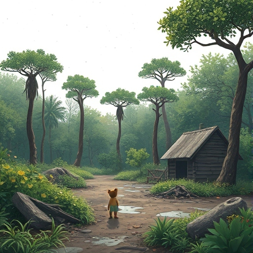

Era uma vez, em uma floresta encantada, um pequeno macaco chamado Tico. Ele adorava voar entre as árvores e cantar para seus amigos. A floresta era cheia de vida, onde cada planta e animal tinha um lugar especial. Mas Tico sabia que algumas coisas estavam mudando...
Capítulo 2: Grande Mudança

Um dia, Tico ouviu um barulho estranho. Quando foi ver, viu homens grandes com máquinas cortando as árvores! “O que está acontecendo?” ele perguntou. “Precisamos da floresta para viver!” gritou o macaco. Tico ficou triste ao ver sua casa sendo destruída e decidiu que precisava fazer algo.
Capítulo 3: A Grande Corrente do Bem
Juntos, Tico e seus amigos decidiram agir! Eles fizeram cartazes e organizaram uma grande reunião. “Vamos mostrar a todos a importância da floresta!” disse a tartaruga. Com coragem e união, os animais começaram a contar suas histórias e a proteger o lar que tanto amavam. E assim, Tico e seus amigos plantaram novas árvores e ensinaram a todos que a floresta precisa de cuidado e amor.